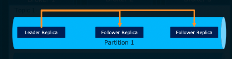

17. MSK:Managed Streaming for Kafka¶
MSKはApache Kafkaを利用してストリーミングデータを処理するアプリケーションをの構築を可能とする、フルマネージドで可用性が高くセキュアなApache Kafka サービス
以下のメリットがある。
OSSのKafkaのAPIが利用可能
BrokerやZookeeperインフラがマネージドで提供されている
AWSサービスとの統合
IAM/権限管理
KMS/セキュアなデータのやり取り
17.1. kafkaの概要¶
そもそもApache kafkaは、パブリッシュ・サブスクライブモデルの分散メッセージング基盤である。 LinkedInによって開発され、多くの導入実績があり、高スループット、リアルタイム性を有し、スケーラビリティに優れている。
17.1.1. kafkaの役割¶
データソースから生成されるストリームデータを取り込んで永続化して、他のサービスへ連携することがkafkaの役割
そもそもストリームデータとは、多数のデータソースによって継続的に生成されるデータであり、大量のデータを扱うためにkafkaには以下を満たす力がある。
拡張性
スケーラビリティ
耐障害性
低遅延性
17.1.2. kafkaの仕組み¶
Push型のキューシステムであり、pub-subモデルを採用している。
ConsumerはPush型であり、ConsumerはPull型として動作する。
Push型では、TopicからSubscriberへの配信は即時に行われる。 Pull型では、キューからConsumerがメッセージを取り出す必要がある。
すなわち、Consumer側のタイミングでMessageを取得することができる。
kafkaでは、複数のサーバーでクラスタ構成をしており、スケーラビリティと可用性を確保している
17.1.2.1. kafka Cluster¶
kafkaのクラスターは以下の構成要素から成り立っている。
ブローカー
クラスターとして動作してデータの受配信を担う クラスター構成のため、スケールアウトが可能パーティション
ブローカー上に分散配置されて、トピックのメッセージが実際に格納される分散キューにあたる
Topicは複数のPartitionから成り立っており、それぞれのPartitionはBrokerに分散して配置される。 ※Partition-Aは１つのPartitionに見えていても、実態は複数のブローカーに分散されており、レプリケーションされているトピック
メッセージを種別で管理する概念的なストレージで、実態はpartitionをまとめたもの。 Producer/Consumerはトピックを指定して、Meaageの送受信を行うZooKeeper
トピックやパーティションのメタ情報を管理しているMessage
kafka内で扱うデータの最小単位で、メッセージにはkey-valueを持たせることができる。
17.1.2.2. トピックとパーティション¶
トピックは概念的なものであり、メッセージを種別でまとめたもの。 実態としてはパーティションが存在しているだけ。
パーティションは可用性のために、ブローカーにレプリケーションを作成している。
BrokerからLeader Replicaが選定される
Producerがパーティションに書き込みを行う場合は、Leader Replicaに対してデータを書き込む
Leader Replicaに書き込まれた内容はBrokerを超えてフォロワーレプリカに複製する（同期の確認はLeaderが行う）

Consumerのメッセージ読み込みもLeader Replicaに対して行う
17.1.2.3. オフセット¶
メッセージがパーティションに書き込まれた際に付与されるシーケンシャルな番号をoffsetと呼ぶ
パーティション単位で最後に取得したメッセージをzooKeeperもしくはkafka自体が保存して、Consumerにも連携しているこのオフセットにより、Consumerは継続的にメッセージのどこまでを読み出したかを管理している。
オフセットには以下の種類が存在し、Consumerが取得するメッセージの範囲やリトライ制御を行う
Log-End-Offset
Partitionのデータの末尾（格納されたデータの数Current-Offset
Consumerがどこまで読み込んだかを示すCommit-Offset
Consumerがどこまでコミットしたかを示す
17.1.2.4. ハイウォーターマーク¶
レプリカによる複製が完了済みのオフセットのことをハイウォーターマークと呼び、Consumerはハイウォーターマークのデータのみを取得できる。
以下の図では、offset3までがConsumerが取得できるoffsetとなる。
17.1.2.5. Producer→Brokerの送信プロセス¶
At Least Oonceのために、Blockerは正しく受信できたことを示すためのAck（肯定応答）を行う。
また、どのパーティションに送信するかのパーティショニング機能が備わっている。
17.1.2.5.1. パーティショニング¶
Topicに対してメッセージを送付する際、Partitionに分散して、配置する。 ProducerからMessageを受け取る際に、Partitionerによって、どのようにMessageを配置するかを決定する
ハッシュ：メッセージのkeyのハッシュを利用して配置する
ラウンドロビン：順番にパーティションを配置する
17.1.2.6. Broker→Consumerの受信プロセス¶
成功した場合は以下のようにoffsetが更新される
ConsumerからBrokerにトランザクション開始のリクエスト
Consumerは取得対象のTopicに対してCurrent-Offsetを確認して、最新Messageを受信リクエストし、Current-Offsetを更新
受信が無事成功
Commit-Offsetが更新され、Commit-OffsetとCurrent-Offsetが一致する

失敗した場合は以下のようにoffsetが更新される
ConsumerからBrokerにトランザクション開始のリクエスト
Consumerは取得対象のTopicに対してCurrent-Offsetを確認して、最新Messageを受信リクエストし、Current-Offsetを更新
受信が失敗
Current-Offsetがロールバックされ、Commit-OffsetとCurrent-Offsetが一致する

17.1.2.7. DLTについて¶
上記のoffsetによるkafka→Consumerの再送はConsumer側がトラブルなどでダウンしてしまった時のエラーハンドリング
一方でメッセージにトラブルがあり、処理できない場合はDLTを利用する。 SQSではマネージドなキューのためコンソール画面などからDLTの設定を行うことができた。具体的には、移動先のDLTとメッセージが読み込まれた回数を設定すると、限度の読み込み回数を超えた場合に自動でDLTに移動された。
MSKでは、明示的にConsumerのソースコードの中に再実行の設定とエラーハンドリングとしてDLTへのメッセージ移動の処理を書く必要がある。再実行とDLTへの移動が完了したら、元のキューに対しては処理完了のコミットを行うことで処理自体としては正常終了したものとして扱う。
17.2. MSKのメッセージ管理詳細¶
17.2.1. group-id¶
MSKはPub-Subモデル（１つのメッセージに対して複数のConsumerが対応）を採用している。 ProducerはTopicに対してメッセージを送信するだけでよいが、Consumer側で'group-id'というものを指定する。
group-idが同じConsumer同士は協調して、同じメッセージを重複処理しないようにする。
groupidが異なるConsumer同士は、互いに独立してメッセージを処理する（同じメッセージが異なるグループで2回処理される）
17.2.2. auto-offset-rest¶
Consumerが起動した際に、読み込むべき最初のオフセットをどのように指定するかの設定。以下の3つの選択肢がある
earliest
最も古いオフセットから読み込むので、全メッセージを消費することになる
普段は、前回のオフセットから実行されるがもし前回のオフセット情報などがない場合に関しては、一番最初から実行されるlatest
最新のオフセットを読み込む。すなわち、消費者が起動してから、追加されたメッセージを消化するnone
Consumerが前回消費した最後のオフセットの次から読み込むが、そのオフセットが存在しない場合、例外がスローされる
17.2.3. offset情報の管理¶
基本的に各Topicは、messageの情報をもつだけで、offset情報はtopicに記録されるわけではない。
offset情報は、__consume_offsetsと呼ばれる特殊なトピックで管理され、記録は各Consumerが行うことになる。
これによって、Consumerがダウンしたとしてもoffsetの情報などは、__consumer_offsetsに管理され、前回に読み取った位置から再開することができる
従って、__consumer_offsetsには、各コンシューマーグループの各トピックの各パーティションについて最後に読み取ったオフセットを保持している。 具体的な__consumer_offsetsの中身は以下だが、これを直接参照することはkafkaのマネージド部分に影響をあたる可能性があるので非推奨
コンシューマグループID： メッセージを消費するコンシューマグループの識別子
トピック名： メッセージが消費される元のトピック名
パーティション番号： 上記トピックの特定のパーティション
オフセット： そのコンシューマグループが次に読み込むべきメッセージの位置。具体的には、最後に読み込まれたメッセージの次のメッセージの位置を示します。
MSKのメトリクスであるSumOffsetLagもこの__consuemr_offsetsを監視している。
17.2.4. __consumer_offsetsの削除ポリシー¶
__consumer_offsetsには、すべてのConsumer Group、トピック、パーティションの組み合わせのオフセット情報を管理するため一般的に大量のデータを保持することになる。
そのため、クリーンアップポリシーを提供している。基本的にはcompactポリシーが適用されている。
delete(log.retention.hours):特定の期間が経過したメッセージを自動削除する
compact:各キーの最新のメッセージのみが保存され、それ以前のメッセージは削除される。
また、ある特定のConsumerGroupが一定期間活動がないと、そのConsumerグループに対するオフセット情報を削除することがある。
これは、offsets.retention.minutesパラメータで設定されており、デフォルトで7日間（10080min)で設定されている。
消費者グループがこの期間以上メッセージを消費していないと、__consumer_offsetsトピックからコンシューマーグループの情報を削除してしまう。
メッセージの消化がなかったとしても、Consumerが最新のオフセットを取得するような挙動をすれば情報が保持される可能性がある。
17.3. MSKの価値¶
■kafkaの課題
kafkaは上記で述べてきたように非常に便利であるものの、分散メッセージ基盤であるため、環境構築において多くのサーバーに対する設定が必要となる。
また、稼働後もブローカーやZookeeperの運用、スケールや監視などの作業が必要となる。
■MSKの価値
MSKではこの問題に対応しており、MSKは一言で言うと
MSKはフルマネージドで可用性が高くセキュアなApache Kafka サービス
である。
MSKでは、以下を提供している
MSKだからこそ容易に実行可能なコントロールプレーン
面倒なクラスターの作成、更新、削除をAPIやマネジメントコンソールから実行することができる
下図の紫色の枠をマネージドに作成・管理ができるApache Kafkaを流用できるデータプレーン
トピックの作成、ProducerやConsumerからのデータのやり取りに関しては、Apache KafkaのAPIをそのままサポート
下図のオレンジ矢印の部分をApache kafkaを流用できる

これらを踏まえ、たとえばEC2上にKafkaを導入する場合とMSKを利用する場合では以下のような差がある

17.3.1. MSKのデプロイメント¶
MSKでは、AZ間でブローカーを均等にデプロイすると言うベストプラクティスを自動で適用してくれる。
作成時に以下を設定する
適用するAZ
AZあたりのブローカー数
17.3.2. MSKのネットワーク¶
MSKでは、自動で作成したクラスターに対する接続はエンドポイントが払い出されるので、そのエンドポイントに対して、クライアントから通信すれば良い。
セキュリティグループはMSKクラスターで指定したセキュリティグループが適用されるが、クライアントと同じセキュリティグループにしておくと比較的簡単に通信ができるようになる。
17.3.3. MSKのセキュリティ¶
大きく以下の４つの機能が存在し、今回は、データの保護、クライアント認証について整理
★データの保護
★クライアント認証
IAMによる操作権限管理
コンプライアンス
★データの保護
データの保護については、大きく３つの対象が存在
保存データの暗号化
ブローカー間の通信の暗号化
クライアントとブローカー間の通信

１、２に関しては、デフォルトでサーバー側暗号化が有効となる。
３に関しては、TLSで暗号化した通信だけ許可することも可能だが、パフォーマンスが30%低下することに注意
★クライアント認証
クライアント認証については、以下の手順を踏む
mskクラスターの作成時にACM Private Certificate AuthorityのプライベートCAを指定
クライアント側に証明書を設定する。
Kafka Autorization CLIを利用してトピックにアクセス権を設定
ブローカー側は
先ほど説明したクライアントとブローカーの通信のTLS暗号化を有効化する
ブローカーはACMの証明書を利用
Amazon Trust Servicesを信頼する

17.3.4. MSKによるクラスターの更新¶
カスタム構成で、既存のクラスターを更新することが可能
kafkaの設定ファイルを作成
MSKのCOnfigurationを作成
MSKクラスターの更新
注意点として、Configurationを一度作成すると削除するAPIがない点やConfigurationを更新する方法がなく、新しく作成するしかない。クラスターの更新時にブローカーと接続断が発生する
デフォルトでは、以下の構成が採用されている

カスタム構成では以下が設定可能
17.3.5. MSKのスケーリング¶
大きく３つのスケーリングが可能
ストレージの拡張:ブローカーのストレージを増やせる
ブローカー数の拡張:AZあたりのブローカを増やせる
ブローカーサイズの拡張:今後可能になる

17.4. MSKのメトリクス¶
MSKではAWSのCloudWatchと統合されており、メトリクスを取得可能
基本、拡張ブローカー、拡張トピックの3つのメトリクスレベルがあり、取得できるメトリクスについては、Amazon CloudWatchと連携して、モニタリングが可能。 詳細は公式ドキュメントを参照されたい。
代表的なものを紹介する
基本モニタリング（DEFAULT）
基本的なクラスターレベルとブローカーレベルのメトリクス

拡張ブローカーレベルモニタリング(PRE_BROKER)
基本モニタリングおよび拡張ブローカレベル(ブローカーごとも取得)

拡張トピックレベルモニタリング(PER_TOPIC_PER_BROKER)
拡張ブローカーレベルおよび拡張トピックレベル（トピックごとも取得）

拡張トピックレベルモニタリング(PER_TOPIC_PER_PARTITION) 拡張ブローカーレベルおよび拡張パーティションレベル（パーティションごとも取得）
17.5. USEメソッドに関連するメトリクス¶
USEメソッド（利用度、飽和度、エラー数）とその他に分けて、メトリクスを紹介する。
17.5.1. Utilization(使用度)¶
どれだけキューが利用されているかを確認するためのメトリクス
BytesInPerSec(DEFAULT)
Producerから受信したメッセージのバイト数BytesOutPerSec(DEFAULT)
Consumerへ送信したメッセージのバイト数MemoryUsed(DEFAULT)
ブローカーのメモリの使用率NetworkRxPackets(DEFAULT)
ブローカーが受信したデータ数MessagesInPerSec(PER_TOPIC_PER_BROKER)
1秒あたりに受信したメッセージ数
17.5.2. Satulation(飽和度)¶
どれだけキューにメッセージが溜まり、システムが正しく処理を捌き切れているかを確認するためのメトリクス
sumoffsetlag(DEFAULT)
トピックごとの処理されていないメッセージの総数OffsetLag(PER_TOPIC_PER_PARTITION)
パーティションごとの処理されていないメッセージの総数EstimatedMaxTimeLag(DEFAULT)
トピックごとの現在の最後のメッセージが処理されるまでの必要な時間の推定値EstimatedTimeLag(PER_TOPIC_PER_PARTITION)
パーティションごとの現在の最後のメッセージが処理されるまでの必要な時間の推定値
17.5.3. Errors(エラー数)¶
キューにおける失敗したメッセージを確認するメトリクス。
NetworkRxErrors(DEFAULT)
ブローカーのネットワーク受信エラーの数NetworkTxDropped(DEFAULT)
ブローカーのネットワーク送信エラーの数。
17.5.4. オートスケーリングに利用するメトリクス¶
MSKのメトリクスを利用する際の注意点は、各メトリクスが取得できるタイミングに幾つかのパターンがある。
クラスターが ACTIVE 状態になった後
トピックを作成した後
プロデューサー/コンシューマーが立ち上がった後
コンシューマーグループがトピックから消費した後
上記の条件を満たしてからでないと、オートスケーリングのルール設定でメトリクスを選択できないので注意する。
MSKのメトリクスを監視して、Consumerのオートスケーリングを行う場合に利用できるメトリクスの候補は以下
BytesInPerSec
どれだけのメッセージサイズがMSKに流入しているかから判断するMessagesInPerSec
どれだけのメッセージ数をMSKが受信しているかから判断するsumoffsetlag
どれだけのメッセージがMSKに溜まっているかから判断するEstimatedMaxTimeLag
メッセージが処理されるまでにどの程度かかるかから判断する
17.6. 別サービスとの比較¶
17.6.1. Amazon kinesis Data Streamsとの比較¶
kinesis Data Streamsも大量のストリームをリアルタイムで収集して処理するためのデータストリーミングサービスとなっている。

■API
MSKは、オープンソース互換のAPIなのでKafkaのエコシステムを利用することができる。
一方で、kinesisはAWSが提供するAPIを利用するため、他のAWSサービスとの連携が密となっている
■スケーリング
MSKは、クラスターをプロビジョニングするため、シームレスなスケーリングは困難。
一方で、kinesisでは、スループットをプロビジョニングするので、シームレスなスケーリングが可能
以下のように対応概念を見てみると、クラスターやブローカーという概念が存在しない。

また、構成を見ても、エンドポイントを通じて通信を行うので、バックエンドを意識しないですむ。

■柔軟性
MSKはkafkaのオープンソースを利用しているので、kafkaのエコシステムと互換性があるのがメリットになる。
MSKのメッセージ抽出について、以下のようにSchema Registryを利用して、スキーマに応じた自動的なシリアライゼーションが可能となる
17.7. MSKの実装¶
17.7.1. MSKの採用¶
MSKを採用するか否かは以下のポイントから判断する
オンプレのApache Kafkaを移行したい
EC2のApache Kafkaを移行したい
Apache Kafkaの周辺ツールを利用する必要がある
上記以外の場合は、サーバーレスのメリットがあるので、Amazon Kinesis Data Streamsの利用が推奨
17.7.2. ベストプラクティス¶
MSKを利用する場合は、ベストプラクティスを参考にする

17.7.2.1. クラスターサイズ¶
ブローカー１台あたりのパーティションの推奨数が定義されている

17.8. MSK Serverles¶
2021年に新規発表された